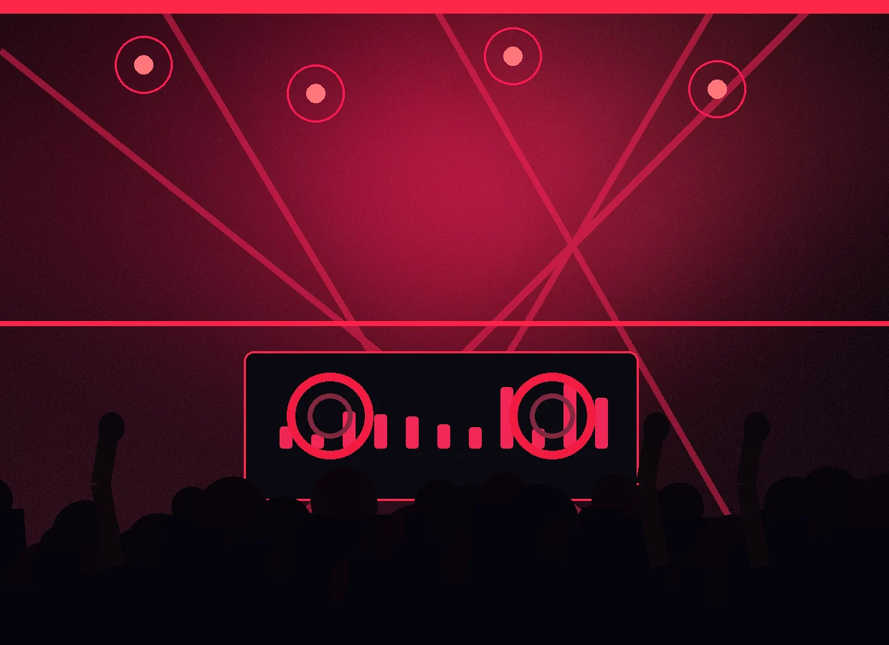
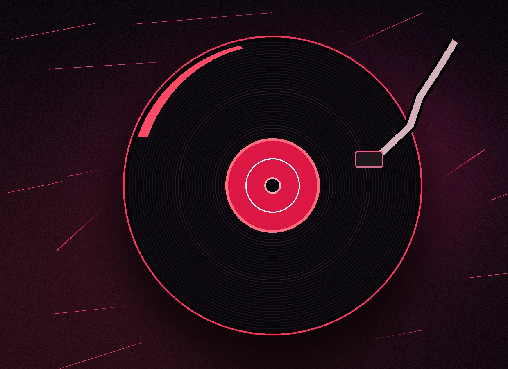
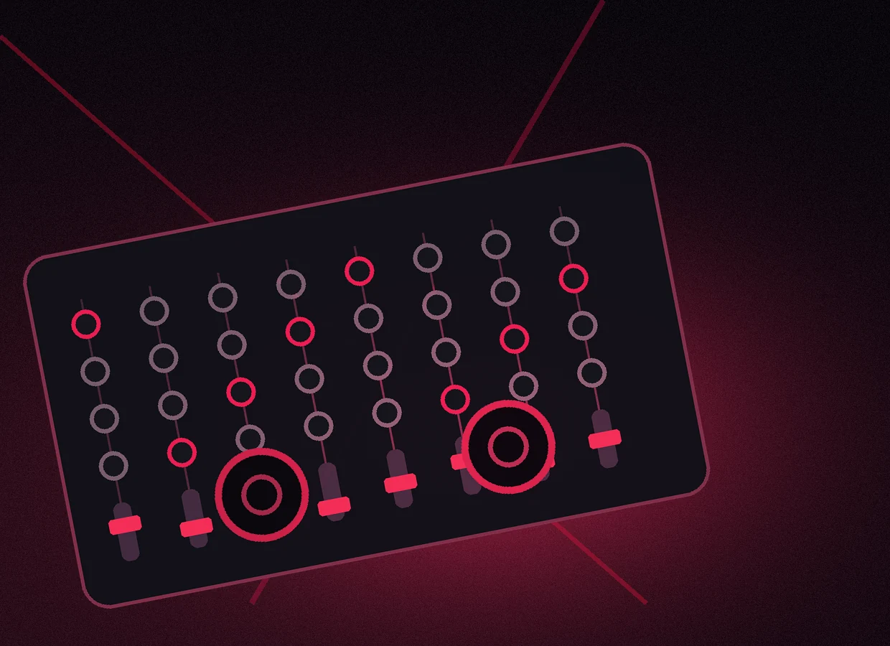
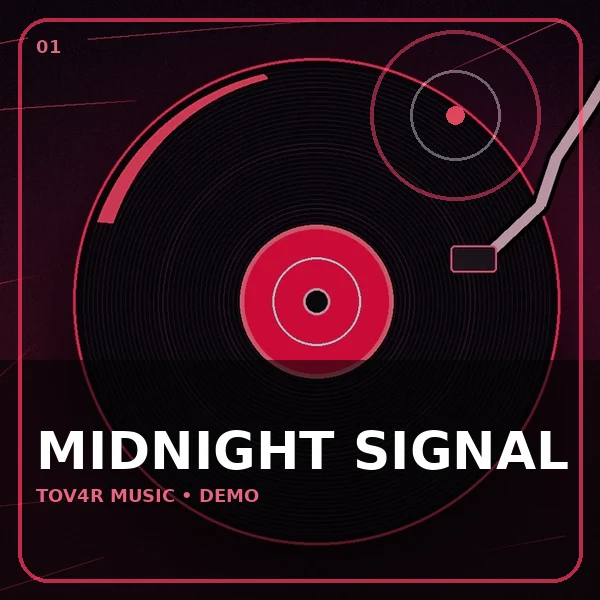
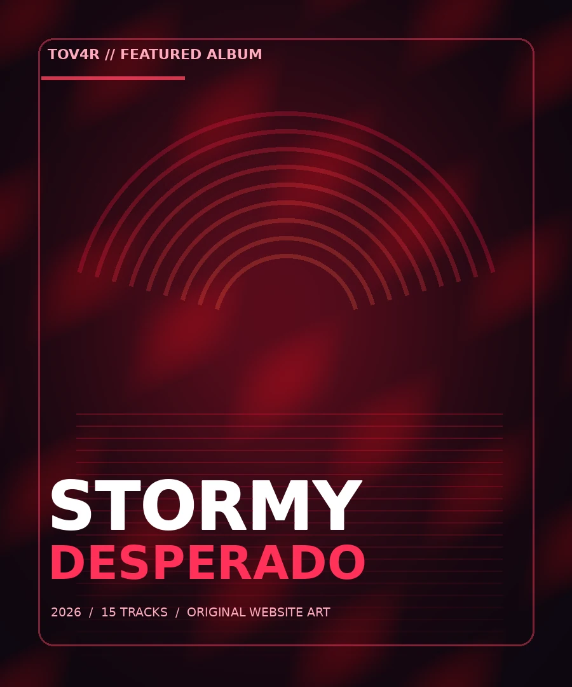
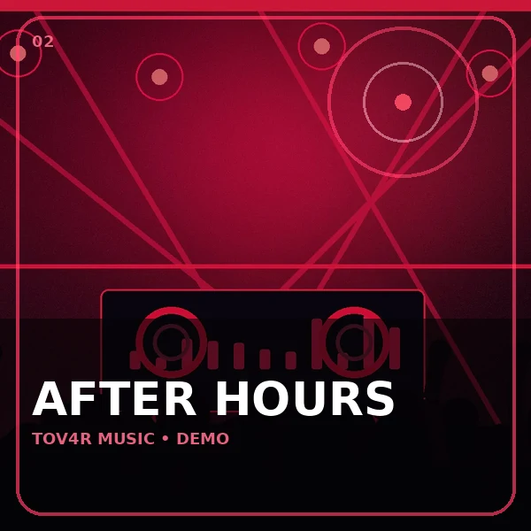
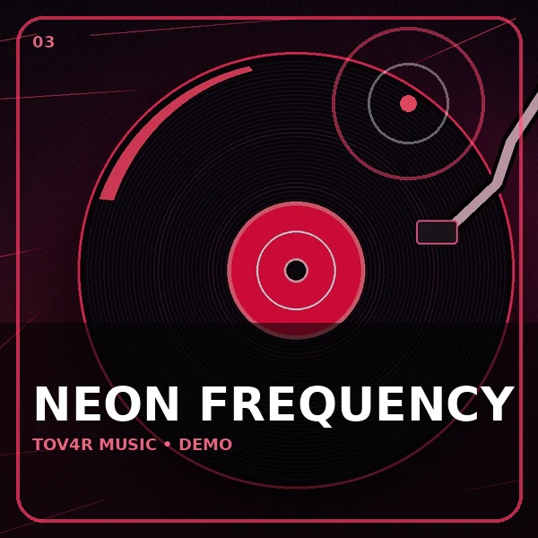
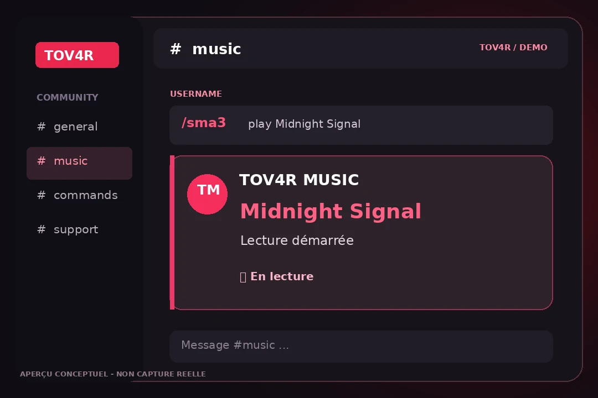
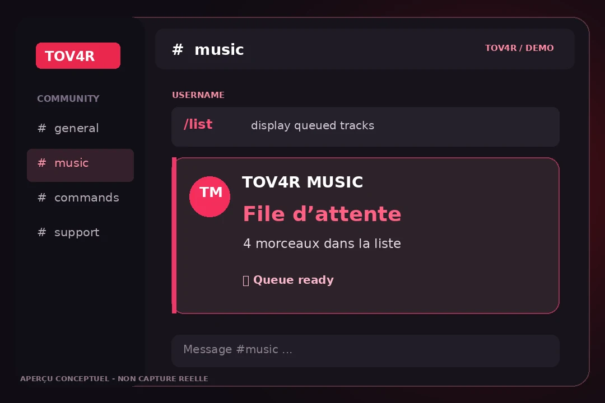
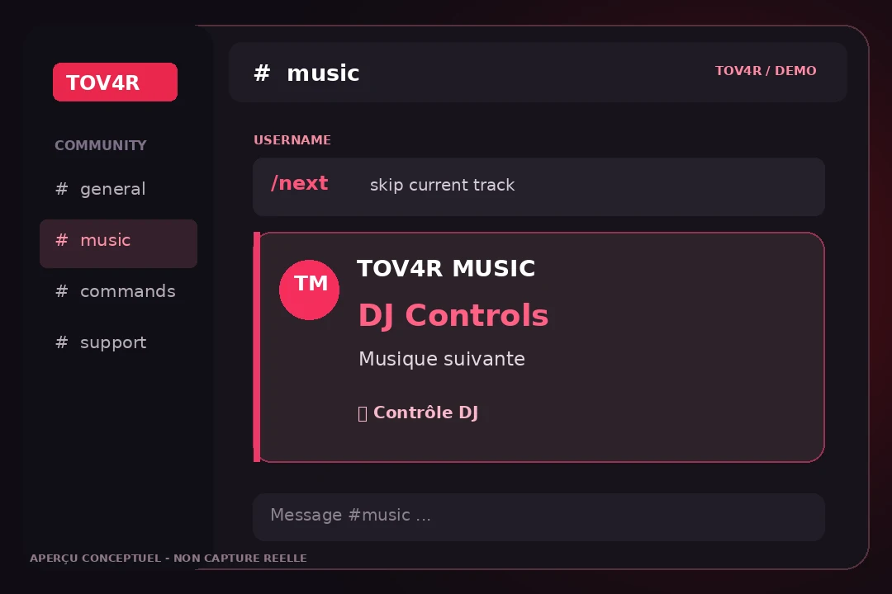

01 / MUSIC
Music on demand.
Lance une recherche musicale directement depuis ton serveur avec /sma3.
Un serveur silencieux ? Not anymore. TOV4R MUSIC ramène l'ambiance sur Discord avec des commandes simples, une file d'attente et un contrôle DJ à portée de main.
Le rythme. Les commandes. La communauté.
Ton son, ton ambiance, ton serveur.
01 // THE MUSIC UNIVERSE
La musique, c'est plus qu'une commande. Découvre l'univers sonore de TOV4R MUSIC.



01 // THE EXPERIENCE
Pensé pour les sessions gaming, les soirées entre potes et les serveurs qui ont besoin d'un peu plus d'énergie.
Lance une recherche musicale directement depuis ton serveur avec /sma3.
Pause, reprise, suivant, volume... Garde le contrôle sans quitter Discord.
Une file d'attente claire pour gérer les prochains morceaux et organiser les sessions.
Des commandes slash faciles à retrouver, même pour les nouveaux membres.
Invitable sur plusieurs serveurs grâce à l'installation Discord.
02 // INTERACTIVE PREVIEW
Un véritable lecteur audio avec 4 créations instrumentales originales. Importe aussi tes fichiers MP3 pour créer ta playlist personnelle. Pour Stormy, utilise le lecteur officiel ci-dessous.

TOV4R DEMO — ORIGINAL PLACEHOLDER
03 // OFFICIAL ALBUM PLAYLIST
2026 / MOROCCAN RAP
La playlist complète de l'album DESPERADO de Stormy, dans son ordre officiel. Lance le lecteur Apple Music pour écouter l'album selon les conditions du service.
La lecture dépend d'Apple Music et de ton abonnement / pays. Les fichiers de Stormy ne sont pas hébergés sur ce site.
 TOV4R / 2026
TOV4R / 2026// MEET YOUR MUSIC BOT
Un bot musical, une seule mission : ramener le son dans ton vocal. Invite TOV4R MUSIC et retrouve tes commandes directement sur Discord.
Artwork créé pour l'univers TOV4R MUSIC.03 // THE COMMAND CENTER
Retrouve les commandes essentielles de TOV4R MUSIC. Un clic suffit pour les copier.
04 // VISUAL EXPERIENCE
Des visuels, des pochettes, une ambiance rouge & noire et des cards qui donnent au site un vrai feeling musical.
Une présence visuelle forte pour montrer que TOV4R MUSIC n'est pas juste un bot, c'est une ambiance.


Le personnage, les visuels et la grille donnent un rendu plus rempli et plus premium.
05 // BOT COMMANDS IN ACTION
Aperçus illustratifs de l'expérience dans Discord : jouer, contrôler et consulter la file d'attente. Visuels conceptuels, non captures d'un serveur réel.



04 // GET STARTED
Pas de configuration compliquée pour les membres : quelques clics et ton bot apparaît dans le serveur.
Clique sur « Ajouter le bot » et choisis le serveur où tu as l'autorisation de gérer les applications.
Connecte-toi dans le vocal avec tes amis, puis utilise une commande slash dans un salon texte.
Recherche un titre compatible et utilise les commandes de contrôle pour gérer la session.
05 // NEED HELP?
Retrouve toutes les réponses et les solutions sur notre page support dédiée.
Consulter Support / FAQOui, TOV4R MUSIC peut être installé sur différents serveurs Discord si le bot est configuré en mode public et ses commandes sont synchronisées globalement.
Les commandes prévues comprennent notamment /sma3, /skot, /kml, /next, /saf et /volume. Tu peux explorer et copier les commandes dans la section plus haut.
La compatibilité dépend de la version du bot. Le lecteur Apple Music sur ce site est indépendant du bot Discord : il ne lui ajoute pas de compatibilité.
Le lecteur TOV4R joue de vrais sons originaux directement dans la page, et le lecteur Apple Music affiche l'album DESPERADO. Aucun de ces lecteurs ne contrôle le bot Discord en direct.
La disponibilité dépend de son hébergement et de son fonctionnement côté serveur. Ce site n'affiche pas un statut en direct, et ne garantit pas une disponibilité 24/7.
NO SILENCE. JUST VIBES.
Invite le bot. Réunis ton équipe. Lance la musique.